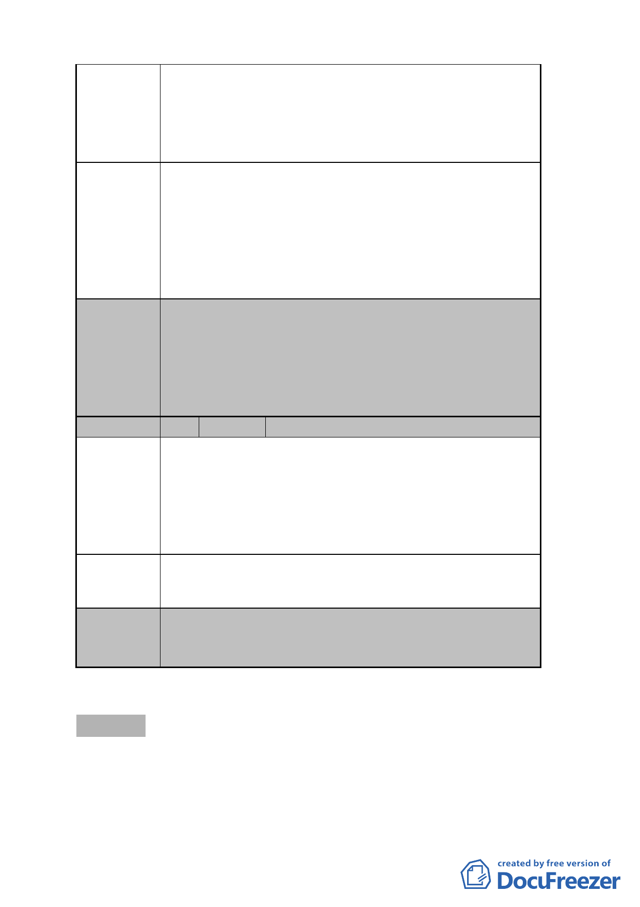

建議辦法
委員會
決議
編號
陳情理由
建議辦法
上述申請實施都市更新事業計畫範圍，除旨揭細部計畫
範圍外，尚申請劃入街廓外本局經管之 113 地號等 5 筆
土地，綜觀「都市更新事業範圍內國有土地處理原則」
尚無規定國有土地得以容積移轉方式辦理，爰請查告該
5 筆土地是否併同細部計畫範圍為同一建築基地。
1.不要限縮建築基地開挖率以不超過 55％為原則。
2.有關該 5 筆土地是否併同細部計畫範圍為同一建築基
地，倘是，因無涉容積移轉，建請併同辦理細部計畫變
更使用分區為第三之一種住宅區（特）；倘否，該 5 筆
土地因非屬更新建築基地範圍，事涉容積移轉，建請臺
北市政府併同調整金山石公司上述申請實施都市更新
事業計畫案範圍。
1.本案有關「地下開挖率」比照其他臺北好好看申請案件
審查之共識，依現行規定辦理，不另行規定。
2.本案和平西路二段 90 巷以西新增劃定之更新地區，應
納入整個計畫區整體規劃開發，未來留設作為公共開放
空間使用，其後管理維護計畫應具體落實，並納入銷售
契約及公寓大廈管理規約載明。
6 陳情人 高尚誠、闕守君、陳碧珍
本案將和平西路二段 70 巷 6 弄 13 號、和平西路二段
70 巷 6 弄 15 號及和平西路二段 70 巷 6 弄臨 21 號等建物
納入計畫範圍，為前列建物所有權人希望參與本計畫範圍
西側之「臺北市中正區永昌段 4 小段 44 地號等 20 筆土地」
之更新案，目前正辦理劃定更新單位程序，已於 98 年 1
月 5 日提出申請。
請將上述建物排除於本計畫案範圍。
委員會
決議
本案依本次會議申請單位所提回應說明，本陳情地點部分
係位於道路用地上，為地區防救災及交通考量，仍應納入
計畫範圍整體開發。
參、散會（18 時）。
- 26 -